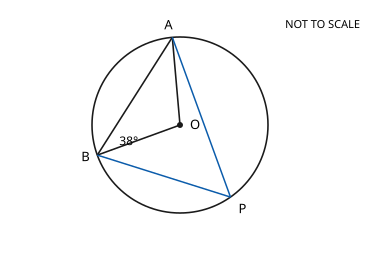
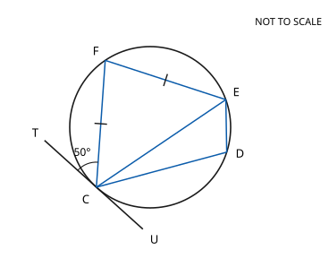
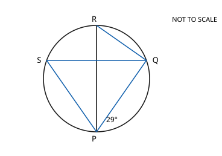
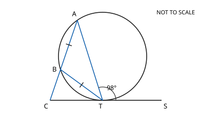
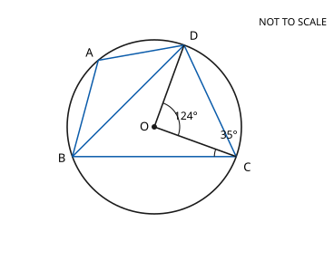
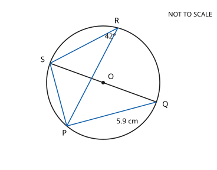

<script>if(location.hostname.endsWith('onrender.com'))location.replace('https://math-sandbox.github.io'+location.pathname+location.search+location.hash)</script>
<section class="theory" data-section="IGCSE-19.4">
<h2>19.4 Angle relationships in circles</h2>
<p class="src">Based on Cambridge IGCSE Mathematics Core and Extended Coursebook (Karen Morrison and Nick Hamshaw), Chapter 19. The wording is original and follows the published section titles and the standard Cambridge IGCSE treatment of the topic. Printed pp.656–670.</p>
<p class="key-words"><strong>Key words:</strong> <em>angle at the centre</em>, <em>angle in a semicircle</em>, <em>cyclic quadrilateral</em>, <em>alternate segment</em></p>
<h3>The main circle theorems</h3>
<p>The following facts are used throughout this subsection. In each case the statements are about a circle, with the usual names for the centre, chords, and tangents.</p>
<ul>
<li>The angle at the centre is twice the angle at the circumference when both angles stand on the same arc.</li>
<li>The angle in a semicircle is a right angle: an angle at the circumference standing on a diameter is \(90^\circ\).</li>
<li>Angles in the same segment, standing on the same chord, are equal.</li>
<li>Opposite angles of a cyclic quadrilateral add to \(180^\circ\).</li>
<li>The tangent at a point is perpendicular to the radius at that point.</li>
<li>Tangents from an external point to a circle are equal in length, and the two triangles formed with the centre are congruent.</li>
<li>The angle between a tangent and a chord is equal to the angle in the <strong>alternate segment</strong>.</li>
</ul>
<div class="ms-widget" data-widget="circle-angle-theorem"></div>
<script src="../../assets/widget-kinds-pkg14.js"></script>
<div class="worked-example">
<h4>Worked example 1: Angle at the centre</h4>
<p class="src">Coursebook, 19.4, angle-at-the-centre style. New number: angle at the circumference \(27^\circ\).</p>
<p>Points \(A\), \(B\) and \(P\) lie on a circle with centre \(O\), and angle \(APB=27^\circ\). Angle \(APB\) and angle \(AOB\) stand on the same arc \(AB\). Find angle \(AOB\).</p>
<ol class="steps">
<li>The angle at the centre is twice the angle at the circumference standing on the same arc, so angle \(AOB=2\times 27^\circ=54^\circ\). <span class="mark">B1</span></li>
</ol>
<p class="final"><strong>Answer:</strong> \(54^\circ\)</p>
</div>
<div class="worked-example">
<h4>Worked example 2: A cyclic quadrilateral</h4>
<p class="src">Coursebook, 19.4, cyclic-quadrilateral style. New number: one opposite angle \(110^\circ\).</p>
<p>\(CDEF\) is a cyclic quadrilateral, and angle \(CFE=110^\circ\). Find angle \(CDE\).</p>
<ol class="steps">
<li>Opposite angles of a cyclic quadrilateral add to \(180^\circ\), so angle \(CDE=180^\circ-110^\circ=70^\circ\). <span class="mark">B1</span></li>
</ol>
<p class="final"><strong>Answer:</strong> \(70^\circ\)</p>
</div>
<div class="worked-example">
<h4>Worked example 3: Alternate segment and an isosceles triangle</h4>
<p class="src">Coursebook, 19.4, alternate-segment style, numbers in the same family as the official past paper on this page but with a new given angle \(40^\circ\).</p>
<p>A tangent touches a circle at \(C\), and \(CF\) is a chord. The angle between the tangent and the chord \(CF\) is \(40^\circ\). Triangle \(CFE\) is isosceles with \(FC=FE\). Find angle \(EFC\).</p>
<ol class="steps">
<li>By the alternate segment theorem, a base angle of triangle \(CFE\) is \(40^\circ\). The triangle is isosceles with \(FC=FE\), so both base angles are \(40^\circ\). <span class="mark">M1</span></li>
<li>Hence angle \(EFC=180^\circ-40^\circ-40^\circ=100^\circ\). <span class="mark">A1</span></li>
</ol>
<p class="final"><strong>Answer:</strong> \(100^\circ\)</p>
</div>
<h3>Common mistakes</h3>
<ul>
<li>Doubling or halving the wrong angle, when the angle at the centre and the angle at the circumference do not stand on the same arc.</li>
<li>Using the alternate segment theorem with an angle in the segment next to the tangent, rather than the alternate segment.</li>
<li>Forgetting that opposite angles, not adjacent angles, of a cyclic quadrilateral add to \(180^\circ\).</li>
</ul>
<h3>Past paper</h3>
<p class="src">0580/43/O/N/21 Q2, official QP and official MS.</p>
<p>(a) \(A\), \(B\) and \(P\) are points on a circle, centre \(O\) and angle \(OBA=38^\circ\).</p>
<figure><figcaption>NOT TO SCALE.</figcaption></figure>
<p>Find angle \(APB\). [3]</p>
<p>(b) \(CDEF\) is a cyclic quadrilateral and \(FC=FE\).</p>
<p>\(TU\) is a tangent to the circle at \(C\) and angle \(TCF=50^\circ\).</p>
<figure><figcaption>NOT TO SCALE.</figcaption></figure>
<p>Find</p>
<p>(i) angle \(EFC\), [2]</p>
<p>(ii) angle \(CDE\). [1]</p>
<details><summary>Mark scheme</summary>
<ol class="steps">
<li>(a) Triangle \(OAB\) is isosceles with \(OA=OB\), so angle \(AOB=180^\circ-2\times 38^\circ=104^\circ\). <span class="mark">M1</span> Official MS: M1 for \(180-2\times 38\), implied by \(104\).</li>
<li>(a) Angle \(APB\) is the angle at the circumference standing on the same arc as angle \(AOB\), so it is half of \(104^\circ\). <span class="mark">M1</span> Official MS: M1 for their AOB \(\div 2\).</li>
<li>(a) Angle \(APB=52^\circ\). <span class="mark">A1</span> Official MS: \(52^\circ\), 3 marks.</li>
<li>(b)(i) By the alternate segment theorem, \(FEC=50^\circ\) or \(FCE=50^\circ\). <span class="mark">B1</span> Official MS: B1 for \(FEC=50\) or \(FCE=50\).</li>
<li>(b)(i) Triangle \(FCE\) is isosceles with \(FC=FE\), so angle \(EFC=80^\circ\). <span class="mark">A1</span> Official MS: \(80^\circ\), 2 marks.</li>
<li>(b)(ii) Opposite angles of cyclic quadrilateral \(CDEF\) add to \(180^\circ\), so angle \(CDE=100^\circ\). <span class="mark">B1</span> Official MS: \(100^\circ\), 1 mark, FT \(180-\) their (i).</li>
</ol>
</details>
<h3>Past paper</h3>
<p class="src">0580/42/M/J/22 Q2, official QP and official MS.</p>
<p>(a) The points \(P\), \(Q\), \(R\) and \(S\) lie on a circle with diameter \(PR\).</p>
<figure><figcaption>NOT TO SCALE.</figcaption></figure>
<p>Work out the size of angle \(PSQ\), giving a geometrical reason for each step of your working. [3]</p>
<p>(b) The points \(A\), \(B\) and \(T\) lie on a circle and \(CTS\) is a tangent to the circle at \(T\).</p>
<p>\(ABC\) is a straight line and \(AB=BT\).</p>
<p>Angle \(ATS=98^\circ\).</p>
<figure><figcaption>NOT TO SCALE.</figcaption></figure>
<p>Work out the size of angle \(ACT\). [4]</p>
<details><summary>Mark scheme</summary>
<ol class="steps">
<li>(a) Angle \(PQR=90^\circ\), angle in a semicircle. <span class="mark">B1</span> Official MS: \(PQR=90\) angle in semi-circle.</li>
<li>(a) Angle \(PRQ=61^\circ\), angle sum of triangle. <span class="mark">B1</span> Official MS: \(PRQ=61\) angle sum of triangle \([=180]\).</li>
<li>(a) Angle \(PSQ=61^\circ\), angle in the same segment. <span class="mark">B1</span> Official MS: \(PSQ=61\) angle in same segment. If 0 scored, SC1 for \(PSQ=PRQ[=61]\) soi.</li>
<li>(b) Angle \(ABT=98^\circ\). <span class="mark">B1</span> Official MS: B1 for \(ABT=98\).</li>
<li>(b) Angle \(TAB\) or angle \(ATB=41^\circ\). <span class="mark">B1</span> Official MS: B1 for \(TAB\) or \(ATB=41\).</li>
<li>(b) Angle \(BTC=41^\circ\), or \(TBC=82^\circ\), or \(ATC=82^\circ\). <span class="mark">B1</span> Official MS: B1 for \(BTC=41\) or \(TBC=82\) or \(ATC=82\) soi.</li>
<li>(b) Angle \(ACT=57^\circ\). <span class="mark">A1</span> Official MS: \(57\), 4 marks.</li>
</ol>
</details>
<h3>Past paper</h3>
<p class="src">0580/41/O/N/21 Q5, official QP and official MS.</p>
<p>(a) \(A\), \(B\), \(C\) and \(D\) are points on a circle, centre \(O\).</p>
<p>Angle \(COD=124^\circ\) and angle \(BCO=35^\circ\).</p>
<figure><figcaption>NOT TO SCALE.</figcaption></figure>
<p>(i) Work out angle \(CBD\).</p>
<p>Give a geometrical reason for your answer. [2]</p>
<p>(ii) Work out angle \(BAD\).</p>
<p>Give a geometrical reason for each step of your working. [4]</p>
<p>(b) \(P\), \(Q\), \(R\) and \(S\) are points on a circle, centre \(O\).</p>
<p>\(QS\) is a diameter.</p>
<p>Angle \(PRS=42^\circ\) and \(PQ=5.9\) cm.</p>
<figure><figcaption>NOT TO SCALE.</figcaption></figure>
<p>Calculate the circumference of the circle. [5]</p>
<details><summary>Mark scheme</summary>
<ol class="steps">
<li>(a)(i) Angle \(CBD=62^\circ\), because the angle at the centre is twice the angle at the circumference. <span class="mark">B1</span> Official MS: \(62\).</li>
<li>(a)(i) The geometrical reason is given: the angle at the centre is twice the angle at the circumference. <span class="mark">B1</span> Official MS: B1 for either the angle or the reason, and B1 for the other; “Angle at centre is twice angle at circumference oe”.</li>
<li>(a)(ii) Angle \(BAD=117^\circ\). <span class="mark">B2</span> Official MS: B2 for 117 or B1 for [angle OCD =] 28.</li>
<li>(a)(ii) Triangle \(OCD\) is isosceles. <span class="mark">B1</span> Official MS: B1dep for isosceles [triangle].</li>
<li>(a)(ii) Opposite angles in a cyclic quadrilateral are supplementary. <span class="mark">B1</span> Official MS: B1 for opposite angles in a cyclic quadrilateral are supplementary.</li>
<li>(b) Angle \(PQS=42^\circ\). <span class="mark">B1</span> Official MS: B1 for angle \(PQS=42\).</li>
<li>(b) \(QS=5.9\div\cos 42^\circ\). <span class="mark">M2</span> Official MS: M2 for \(QS=5.9\div\cos 42\) oe, or M1 for \(\cos 42=5.9/QS\) oe.</li>
<li>(b) The circumference is \(QS\times\pi\). <span class="mark">M1</span> Official MS: M1dep for their \(SQ\times\pi\) oe.</li>
<li>(b) The circumference is \(24.9\) cm. <span class="mark">A1</span> Official MS: \(24.9\) or \(24.94\) to \(24.95\), 5 marks.</li>
</ol>
</details>
<div class="quick-check">
<h4>Quick check 1</h4>
<p>An angle at the circumference standing on an arc is \(32^\circ\). Find the angle at the centre, in degrees, standing on the same arc.</p>
<details><summary>Worked solution</summary>
<ol class="steps"><li>The angle at the centre is twice the angle at the circumference, so \(64^\circ\).</li></ol>
<p class="final"><strong>Answer:</strong> \(64\)</p>
</details>
</div>
<div class="quick-check">
<h4>Quick check 2</h4>
<p>\(PQRS\) is a cyclic quadrilateral and angle \(PQR=95^\circ\). Find angle \(PSR\).</p>
<details><summary>Worked solution</summary>
<ol class="steps"><li>Opposite angles add to \(180^\circ\), so angle \(PSR=85^\circ\).</li></ol>
<p class="final"><strong>Answer:</strong> \(85\)</p>
</details>
</div>
<div class="quick-check">
<h4>Quick check 3</h4>
<p>The angle between a tangent and a chord is \(32^\circ\). The chord is one equal side of an isosceles triangle whose two equal sides meet at a point on the circle. Find the angle, in degrees, at that point.</p>
<details><summary>Worked solution</summary>
<ol class="steps"><li>By the alternate segment theorem both base angles are \(32^\circ\), so the remaining angle is \(180^\circ-32^\circ-32^\circ=116^\circ\).</li></ol>
<p class="final"><strong>Answer:</strong> \(116\)</p>
</details>
</div>
</section>
